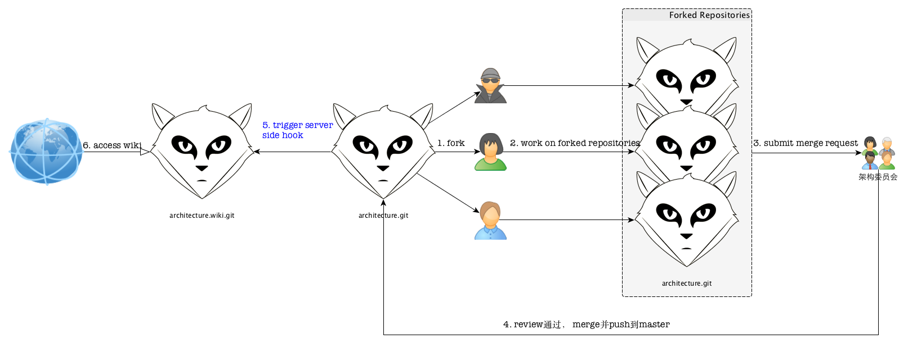

gitlab的server端hook简要使用说明
王福强 - fujohnwang AT gmail DOTA com
2015-07-23
我们挖财内部所有的研发围绕着gitlab为起点而进行(gitlab as genesis)， 包括code， issues, wiki等， 大部分情况下， wiki是开放编辑的，但少部分项目牵扯到内容的review，所以，需要对这部分wiki进行一定时间窗口的“截留”， 比如，我们的架构规范， 一定是需要先提交初稿， 经过架构委员会review并通过之后，才可以正式发布， 但gitlab集成的wiki系统比较弱，所以，我们适当的进行了变通， 即wiki的编写和提交按照代码项目一样的流程， 新的架构规范提交后，需要提交merge request， review通过后再merge到项目的master， 这个时候，我们希望可以触发某个动作，来发布新的内容到wiki， 这里，就用到了gitlab的server端hook支持，整个流程大体上如下图所示：

gitlab的server端hook配置大体步骤是这样的：
- 在gitlab的server端要配置server端hook的项目目录下新建一个
custom_hooks目录；- 注意 - 是在server端的repo目录下新建，即当前项目的git的bare repo， 而不是本地的甚至是clone后的repo！！！
- 在custom_hooks目录下新建post-receive钩子文件； - post-receive属于一个标准的shell脚本文件
- 在post-receive钩子文件中添加相应的逻辑，将当前项目下的内容同步到同一项目的wiki目标repository；
- 补充说明 - gitlab或者github的一个特性是， projectX.git如果是项目的repo地址，那么, 与之对应的wiki项目也有一个git的repo地址， 遵循一个命名convention， 即如果项目的地址是projectX.git，那么wiki的项目地址就是projectX.wiki.git， 我们的server端hook的执行逻辑根据这一convention而来；
我们使用的同步hook的内容如下，仅供参考：
#!/bin/bash
SCRIPT_DIR="$( cd "$( dirname "${BASH_SOURCE[0]}" )" && pwd )"
SRC_DIR=${SCRIPT_DIR}/../../architecture.git
DEST_DIR=${SCRIPT_DIR}/../../architecture.wiki.git
/usr/bin/rsync -avz --delete $SRC_DIR/ $DEST_DIR/参考资料
http://doc.gitlab.com/ce/hooks/custom_hooks.html
「为AI疯狂」星球上，扶墙老师正在和朋友们讨论有趣的AI话题，你要不要⼀起来呀？^-^
这里
- 不但有及时新鲜的AI资讯和深度探讨
- 还分享AI工具、产品方法和商业机会
- 更有原价1000多的付费内容(近500分钟)等着你，加入星球(https://t.zsxq.com/0dI3ZA0sL) 即可免费领取!